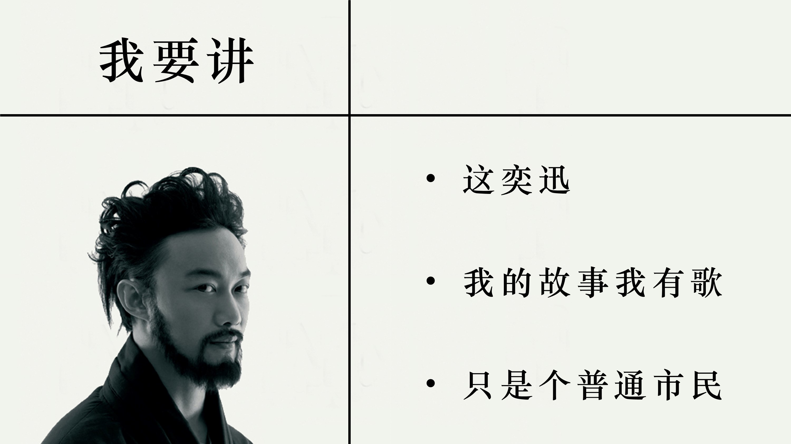
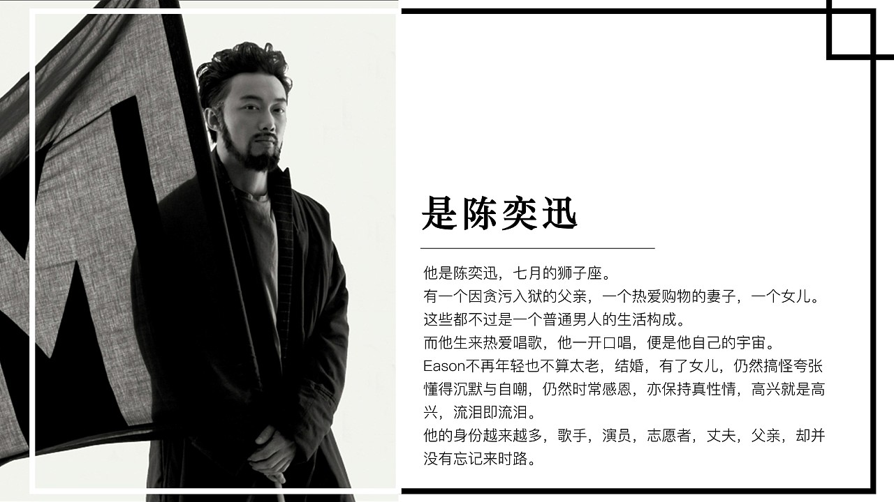

这是Pmx的第一个网页
介绍了他最崇拜的eason
 陈奕迅是香港主流乐坛的代表性人物之一 ，被外界誉为“张学友的接班人”。他在音乐上经历了一个由商业到不商业、由不自我到自我的过程。他因为流行曲而被更多的人所认知，在成名以后他又用音乐逐渐改变人们对流行曲的理解。他可以把每一首歌完全吸收消化，然后用直接和诚恳的方式诠释歌曲。他不仅能用发自内心的感情演唱情歌，而且还具有多层面的个性和思维，这也导致他几乎可以胜任所有类型的歌曲
陈奕迅在成名以后并没有止步不前，而是不断的汲取养分，凭借天赋、灵感以及进取认真的态度赢得歌迷的喜爱。他是影响香港乐坛风格的歌手。他在音乐上不拘于形式，并且勇于突破。他发行的每一张唱片都会尝试一些不一样的音乐元素，先后涉猎了电音、爵士、摇滚、独立音乐等各种音乐风格。
陈奕迅凭借随性不羁、鬼马搞怪的风格在香港乐坛独树一帜 。他的嗓音厚实中带着沙哑 ，唱腔慵懒且具有独特的个性。他擅长把华丽和经典的唱腔结合，将歇斯底里与俏皮的气质融入心灵。而在着装和造型上，他更是挥洒个性，独特的穿衣风格让他成功吸引众人的目光 ；诸多出人意料的造型也让他一次次地创造出潮流 。
陈奕迅以“化腐朽为神奇”的唱功见长，对歌曲演绎的细腻与弹性，深厚的香港情怀，将粤语流行曲带向一个新的高度